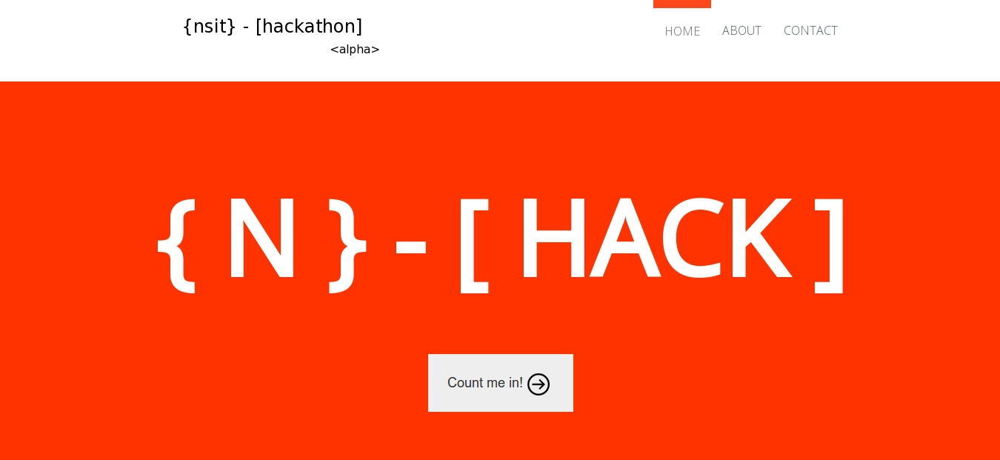
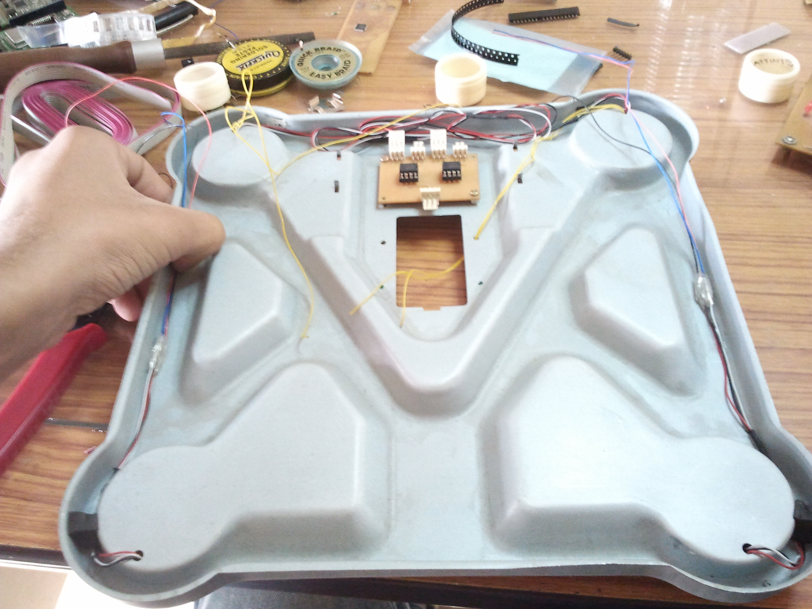
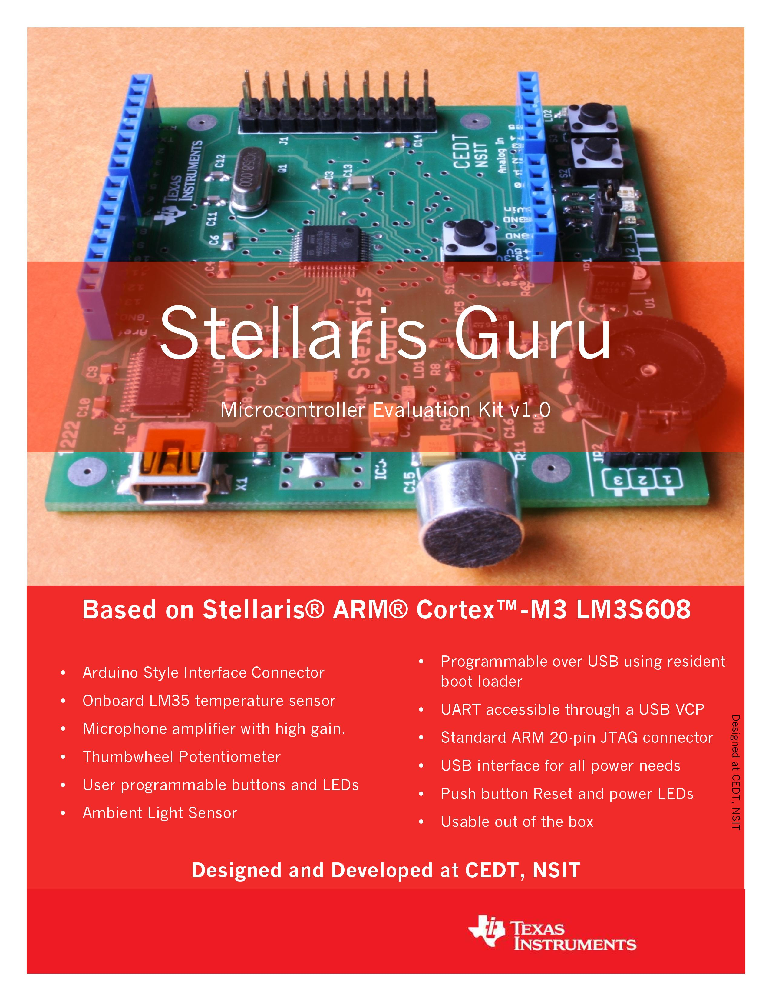
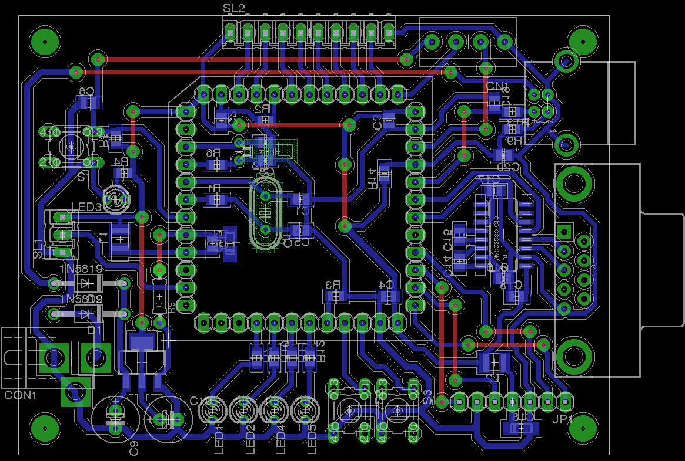
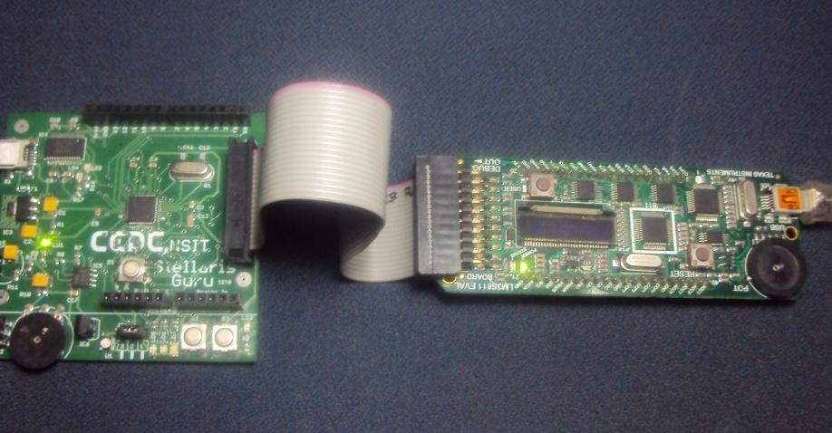
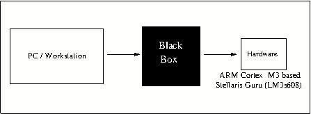
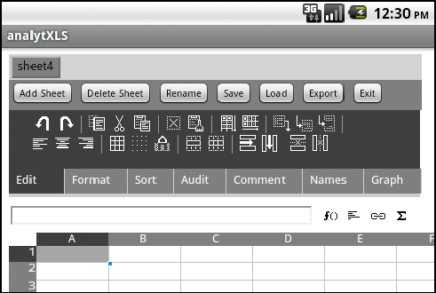
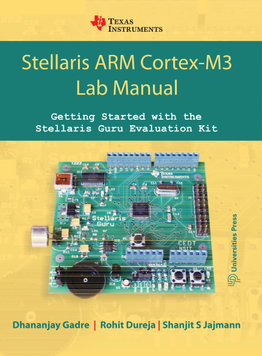

Projects
Hardware Software Co-design (Sep, 2012 - to-date)
Final Year Bachelor of Engineering Project. Under Progress.
VHDL
FPGA
ARM Assembly
C
ARM Architecture
PCB Design: Eagle
Hardware Fabrication
Weekend Project: NSIT Hackathon

College Hackathon Website
An initiative by the Centre for Electronics Design and Technology.
An initiative by the Centre for Electronics Design and Technology.
PostgreSQL
Ruby on Rails
MySQL
Heroku
Multilingual Cloud based Health Monitoring Manager
TI Analog Design Contest 2011

Create an interface for easier integration of physical readings from Daily Life devices onto the cloud. We initially thought of using Pachube using the Pachube API, later thought of moving to Google Health (which unfortunately was shutdown midway during the project).
As a proof of concept we hacked a weighing scale and transferred physical value on a real-time basis onto a web application. The project was implemented for English and French.
As a proof of concept we hacked a weighing scale and transferred physical value on a real-time basis onto a web application. The project was implemented for English and French.
ARM Architecture
C
Java
Android
PCB Design: Eagle
Stellaris Guru

A Texas Instruments funded Project. Developing pedagogy material along with low-cost Stellaris Guru Boards for hands-on learning.
Incorporated as a permanent product by Texas Instruments.
Incorporated as a permanent product by Texas Instruments.
ARM Architecture
C
PCB Design: Eagle
Hardware Fabrication
Stellaris Shuru

A prequel to the Stellaris Guru. This was the first initial board tested and made.
ARM Architecture
C
PCB Design: Eagle
Hardware Fabrication
STM32 Protoboard

My introduction to the ARM microcontroller family.
ARM Architecture
ARM Assembly
C
PCB Design: Eagle
Hardware Fabrication
Debugging TI and STM ARM uCs in Eclipse

The Open On-Chip Debugger is aims to provide debugging, in-system programming and boundary-scan testing for embedded target systems. OpenOCD provides the ability to flash NAND and NOR FLASH memory devices that are attached to the processor on the target system. Flash programming is supported for external CFI compatible flashes (Intel and AMD/Spansion command set) and several internal flashes (LPC2000, AT91SAM7, STR7x, STR9x, LM3 and STM32x).
I have used Eclipse Plugins alongside OpenOCD and gdb for both debugging and programming of custom boards using JTAG.
I have used Eclipse Plugins alongside OpenOCD and gdb for both debugging and programming of custom boards using JTAG.
ARM Architecture
ARM Assembly
C
PCB Design: Eagle
Hardware Fabrication
ARM Cortex-M3 Toolchain Setup for TI and ST uCs

That blackbox which converts the code from user readable format to the hex format to be burnt onto the board, encompasses the toolchain.
This is the documentation for the same.
This is the documentation for the same.
ARM Architecture
ARM Assembly
C
PCB Design: Eagle
Hardware Fabrication
Blow Rockets: Diwali 2011
Diwali 2011 had great experience in store for me. A startup Memetic Labs had this amazing idea for a stall.
Check out the video.
Check out the video.
Arduino
Django
Actionscript
AnalytXLS: Android Application

The project has been implemented with the help of SocialCalc.
The cells and the basic look of this part has been ported to android using a webview.
Google Sync functionality available.
The cells and the basic look of this part has been ported to android using a webview.
Google Sync functionality available.
Android
Java
Python
Publications
Book
Stellaris ARM Cortex-M3 Lab Manual - Getting Started with the Stellaris Guru Evaluation Kit;Dhananjay V. Gadre, Rohit Dureja, Shanjit S. Jajmann,
1st Edition, 2013, Universities Press.

The book is a beginners guide to the ARM Cortex-M3 Family of microcontrollers by Texas Instruments.
Consists of over 25 fully explained experiments which can be done using the Guru kit and over 30 experiments which are included as exercises for the reader.
The publication is included as a part of the Stellaris Guru Evaluation kit and is also available for off-the-shelf purchasing.
Designed and developed at the Centre for Electronics Design and Technology, NSIT, New Delhi.
Consists of over 25 fully explained experiments which can be done using the Guru kit and over 30 experiments which are included as exercises for the reader.
The publication is included as a part of the Stellaris Guru Evaluation kit and is also available for off-the-shelf purchasing.
Designed and developed at the Centre for Electronics Design and Technology, NSIT, New Delhi.